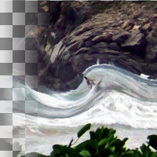

Whirl Pinch
Distort an image by whirling and pinching
Whirl
Whirl angle (degrees)
name: whirl
type: double
default: 90.00
minimum: -inf
maximum: +inf
ui-minimum: -720.00
ui-maximum: 720.00
ui-gamma: 1.00
ui-step-small: 1.00
ui-step-big: 15.00
ui-digits: 1
unit:degree
Pinch
Pinch amount
name: pinch
type: double
default: 0.00
minimum: -1.00
maximum: 1.00
ui-minimum: -1.00
ui-maximum: 1.00
ui-gamma: 1.00
ui-step-small: 0.00
ui-step-big: 0.10
ui-digits: 3
Radius
Radius (1.0 is the largest circle that fits in the image, and 2.0 goes all the way to the corners)
name: radius
type: double
default: 1.00
minimum: 0.00
maximum: 2.00
ui-minimum: 0.00
ui-maximum: 2.00
ui-gamma: 1.00
ui-step-small: 0.00
ui-step-big: 0.10
ui-digits: 3
pads: input output
parent-class: GeglOperationFilter
categories: distort map
source: operations/common-gpl3+/whirl-pinch.c
position-dependent: true
license: GPL3+
 This page is part of the online GEGL Documentation, GEGL is a data flow based image processing library/framework, made to fuel GIMPs high-bit depth non-destructive editing future.
This page is part of the online GEGL Documentation, GEGL is a data flow based image processing library/framework, made to fuel GIMPs high-bit depth non-destructive editing future.